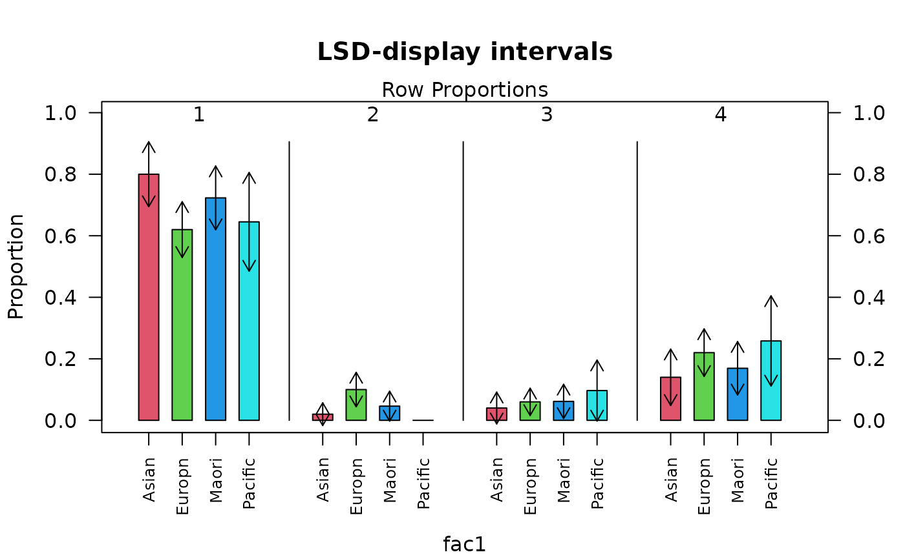
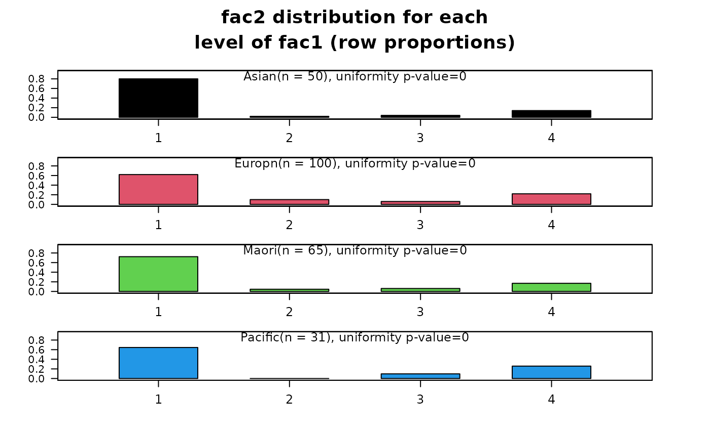
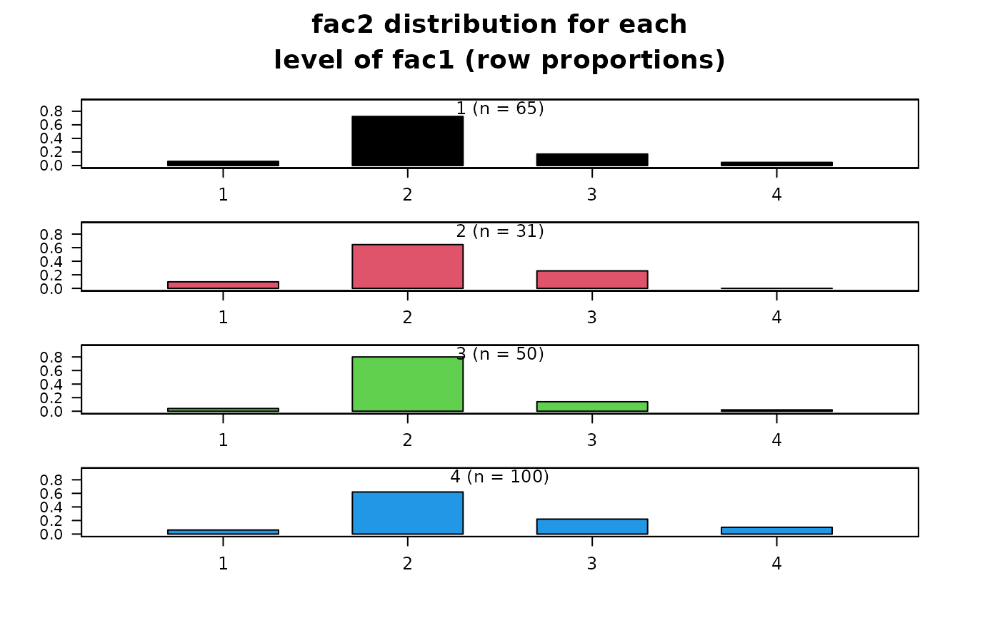

Produces summaries and plots from a cross-tabulation. The output produced depends on the parameter 'comp'. Columns relate to response categories and rows to different populations.
Usage
rowdistr(
crosstablist,
comp = c("basic", "within", "between"),
conf.level = 0.95,
plot = TRUE,
suppressText = FALSE
)Arguments
- crosstablist
a list produced by 'crosstabs' or a matrix containing a 2-way table of counts (without marginal totals).
- comp
three options: 'basic' (default), 'within', and 'between'.
- conf.level
confidence level of the intervals.
- plot
if
FALSEthen the row distribution plots are not displayed- suppressText
if
TRUEthen text results are not displayed
Value
Invisibly returns the matrix of row proportions printed by the
teaching summary when suppressText = FALSE. When
suppressText = TRUE, the function invisibly returns NULL
because no text summary is constructed. Plotting remains a side effect
controlled by plot.
Details
The 'basic' option (default) produces the response distribution for each row population together with comparative bar charts.
If comp = 'between' the resulting output displays how the probability of falling into a response class (column) differs between populations. Confidence intervals for differences in proportions are produced together with a set of barcharts with LSD intervals.
If comp = 'within' the resulting output shows the extent to which the component probabilities of the same row distribution differ. Separate Chi-square tests for uniformity are produced for each row distribution as are confidence intervals for differences in proportions within the same distribution.
Arguments plot and suppressText are really only used when
producing knitr or Sweave documents so that just the plot or just the text
can be displayed in the document.
Examples
data(body.df)
z = table(body.df$ethnicity, body.df$married)
rowdistr(z)
#> Row Proportions
#> 1 2 3 4 Totals n
#> Asian 0.80 0.02 0.04 0.14 1 50
#> Europn 0.62 0.10 0.06 0.22 1 100
#> Maori 0.72 0.05 0.06 0.17 1 65
#> Pacific 0.65 0.00 0.10 0.26 1 31
rowdistr(z, comp = "between")
#> Row Proportions
#> 1 2 3 4 Totals n
#> Asian 0.80 0.02 0.04 0.14 1 50
#> Europn 0.62 0.10 0.06 0.22 1 100
#> Maori 0.72 0.05 0.06 0.17 1 65
#> Pacific 0.65 0.00 0.10 0.26 1 31
#>
#> 95% CIs for diffs between proportions with fac2 = 1
#> (rowname-colname)
#> Europn Maori Pacific
#> Asian (-0.017,0.377) (-0.132,0.286) (-0.117,0.426)
#> Europn (-0.298,0.091) (-0.286,0.235)
#> Maori (-0.192,0.348)
#>
#> 95% CIs for diffs between proportions with fac2 = 2
#> (rowname-colname)
#> Europn Maori Pacific
#> Asian (-0.175,0.015) (-0.112,0.06) (-0.032,0.072)
#> Europn (-0.051,0.159) (0.021,0.179)*
#> Maori (-0.023,0.115)
#>
#> 95% CIs for diffs between proportions with fac2 = 3
#> (rowname-colname)
#> Europn Maori Pacific
#> Asian (-0.116,0.076) (-0.129,0.086) (-0.215,0.101)
#> Europn (-0.102,0.099) (-0.19,0.117)
#> Maori (-0.196,0.125)
#>
#> 95% CIs for diffs between proportions with fac2 = 4
#> (rowname-colname)
#> Europn Maori Pacific
#> Asian (-0.249,0.089) (-0.208,0.149) (-0.363,0.126)
#> Europn (-0.114,0.215) (-0.272,0.196)
#> Maori (-0.33,0.152)

rowdistr(z, comp = "within")
#> Row Proportions
#> 1 2 3 4 Totals n
#> Asian 0.80 0.02 0.04 0.14 1 50
#> Europn 0.62 0.10 0.06 0.22 1 100
#> Maori 0.72 0.05 0.06 0.17 1 65
#> Pacific 0.65 0.00 0.10 0.26 1 31
#> 1 2 3 4 Totals n
#> 0.80 0.02 0.04 0.14 1.00 50.00
#>
#> Chisq test for uniformity: chisq = 82.32 , df = 3 , p-value = 0
#> 95% CIs for diffs in propns within the fac1 = Asian distribution
#> (rowname-colname)
#> 2 3 4
#> 1 (0.608,0.952)* (0.569,0.951)* (0.395,0.925)*
#> 2 (-0.111,0.071) (-0.262,0.022)
#> 3 (-0.254,0.054)
#>
#> ----------------------------------------------------------------------
#> 1 2 3 4 Totals n
#> 0.62 0.10 0.06 0.22 1.00 100.00
#>
#> Chisq test for uniformity: chisq = 78.56 , df = 3 , p-value = 0
#> 95% CIs for diffs in propns within the fac1 = Europn distribution
#> (rowname-colname)
#> 2 3 4
#> 1 (0.343,0.697)* (0.4,0.72)* (0.182,0.618)*
#> 2 (-0.065,0.145) (-0.266,0.026)
#> 3 (-0.293,-0.027)*
#>
#> ----------------------------------------------------------------------
#> 1 2 3 4 Totals n
#> 0.72 0.05 0.06 0.17 1.00 65.00
#>
#> Chisq test for uniformity: chisq = 79.923 , df = 3 , p-value = 0
#> 95% CIs for diffs in propns within the fac1 = Maori distribution
#> (rowname-colname)
#> 2 3 4
#> 1 (0.494,0.859)* (0.469,0.854)* (0.303,0.804)*
#> 2 (-0.123,0.092) (-0.27,0.023)
#> 3 (-0.261,0.046)
#>
#> ----------------------------------------------------------------------
#> 1 2 3 4 Totals n
#> 0.65 0.00 0.10 0.26 1.00 31.00
#>
#> Chisq test for uniformity: chisq = 30.032 , df = 3 , p-value = 0
#> 95% CIs for diffs in propns within the fac1 = Pacific distribution
#> (rowname-colname)
#> 2 3 4
#> 1 (0.418,0.872)* (0.234,0.863)* (-0.024,0.798)
#> 2 (-0.237,0.043) (-0.465,-0.051)*
#> 3 (-0.433,0.11)
#>
#> ----------------------------------------------------------------------

## from matrix of counts
z = matrix(c(4, 3, 2, 6, 47, 20, 40, 62, 11, 8, 7, 22, 3, 0, 1, 10), 4, 4)
rowdistr(z)
#> Row Proportions
#> 1 2 3 4 Totals n
#> 1 0.06 0.72 0.17 0.05 1 65
#> 2 0.10 0.65 0.26 0.00 1 31
#> 3 0.04 0.80 0.14 0.02 1 50
#> 4 0.06 0.62 0.22 0.10 1 100
